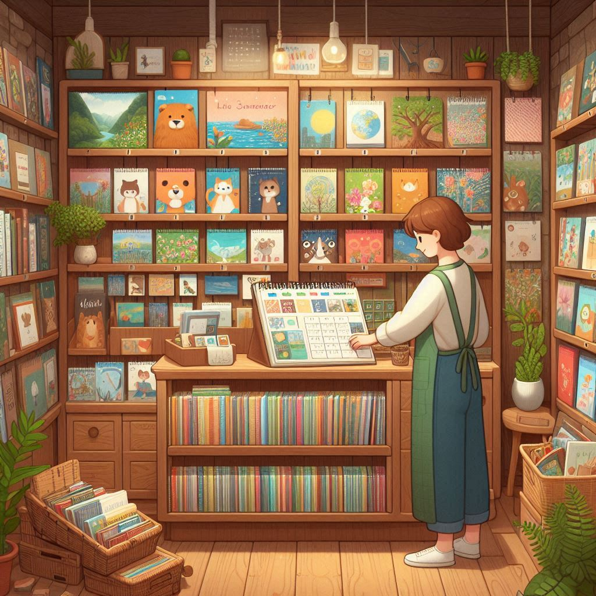

Cég Története!
A Naptárkuckó 2010-ben alakult Budapesten, egy kis családi vállalkozásként. Az alapítás mögött az a cél állt, hogy egyedi, minőségi falinaptárakat készítsünk, amelyek örömet szereznek az embereknek. Az évek során folyamatosan bővítettük kínálatunkat, és számos új technológiát vezettünk be, hogy megfeleljünk a vásárlói igényeknek.
Kezdetben csak néhány alapvető naptártípus volt elérhető, de ma már számtalan egyedi megrendelést is teljesítünk. Cégünk központja a Veres Pálné utcában található. Minden egyes naptárunkat itt készítjük, kézműves gondossággal. Az elmúlt évtizedben számtalan elégedett ügyféllel büszkélkedhetünk.
Az első években nehéz volt megvetni a lábunkat a piacon, de kitartásunk meghozta gyümölcsét. Ma már stabil ügyfélkörrel rendelkezünk, és sok visszatérő vásárlónk van. Büszkék vagyunk arra, hogy egy olyan cég vagyunk, amelyet a minőség és a megbízhatóság jellemez.

Küldetés és Értékek
Cégünk küldetése, hogy olyan falinaptárakat készítsünk, amelyek nemcsak praktikusak, de esztétikusak is. Hiszünk abban, hogy minden egyes naptárnak egyedi története van, és ezt tükröznünk kell a munkánkban.
Ügyfélközpontú hozzáállásunknak köszönhetően mindig figyelembe vesszük a vásárlóink igényeit és kívánságait. Fontos számunkra, hogy mindenki megtalálja a számára tökéletes naptárat. Az értékeink közé tartozik a
minőség, a megbízhatóság és az innováció.
Arra törekszünk, hogy folyamatosan fejlődjünk és új ötletekkel gazdagítsuk kínálatunkat. Minden termékünk mögött kemény munka és elhivatottság áll.
A vásárlóink elégedettsége a legfontosabb számunkra. Hisszük, hogy egy jó naptár segíthet a mindennapok jobb megszervezésében és szebbé tételében. Célunk, hogy mindenki otthonában ott lógjon egy Naptárkuckó naptár.
Visszajelzések
"A Naptárkuckó naptárai mindig gyönyörűek és kiváló minőségűek. Mindig innen rendelek, mert tudom, hogy nem fogok csalódni."
-Anna-
"Rendeltem egy egyedi naptárat ajándékba, és az eredmény lenyűgöző lett! A csapat nagyon segítőkész volt és minden kívánságomat figyelembe vette."
-Péter-
"Nagyon elégedett vagyok a Naptárkuckó termékeivel. A naptárak nemcsak praktikusak, de igazán dekoratívak is. Minden évben innen vásárolok."
-Sára-